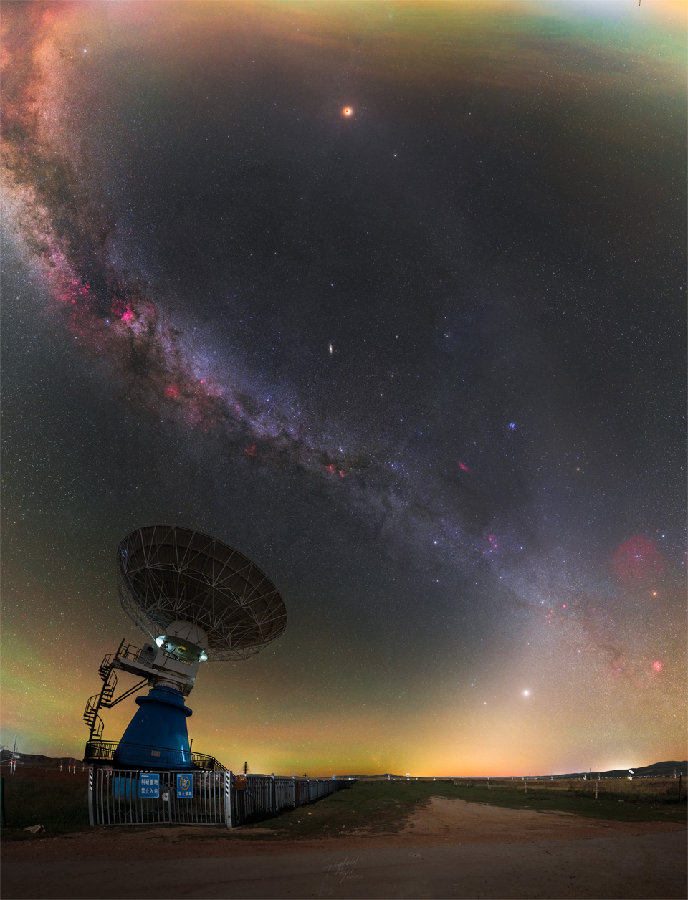

03 de novembro de 2025
NASA Astronomy Picture of the Day
Total Lunar Eclipse Over Milky Way and Zodiacal Light
Naquela noite, a Lua mergulhou na sombra da Terra e se acendeu em laranja — a mesma cor do sol que se põe. E no mesmo céu, a Via Láctea e a luz zodiacal se cruzavam em dupla hélice, como se o universo inteiro tivesse se arrumado para me mostrar que aquele era um momento que não poderia passar despercebido. Foi quando eu te vi pela primeira vez.
